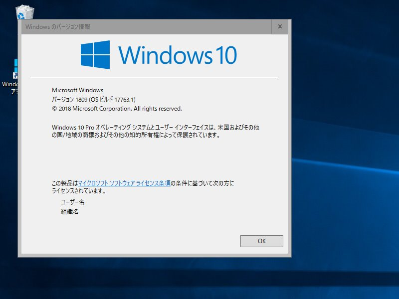
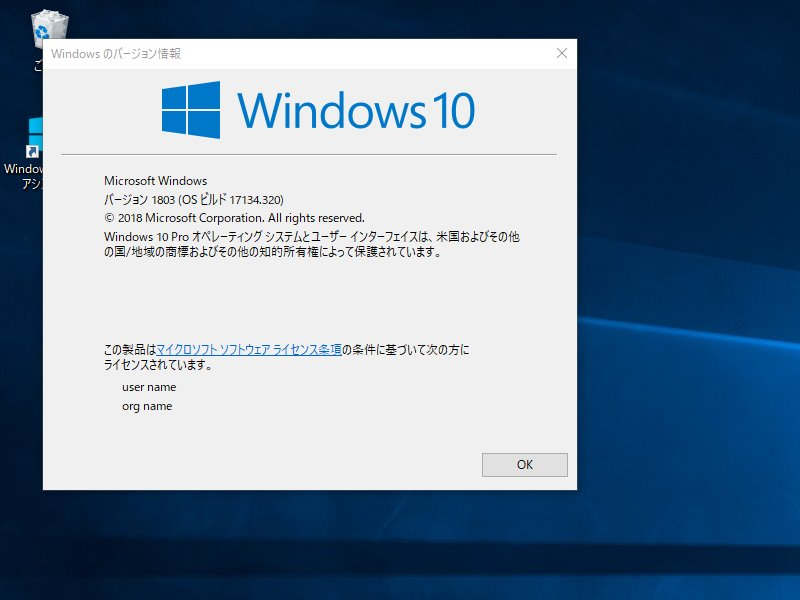
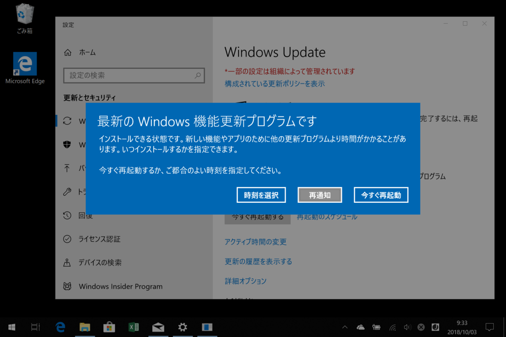
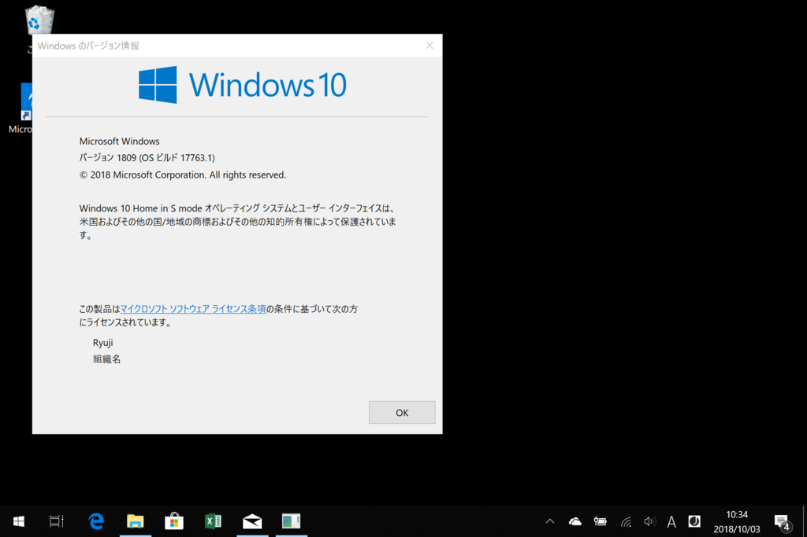

Windows 10 October 2018 Update
公開日：
今朝は Surface の新製品の発表があったそうですが、なんかそのどさくさに埋もれる感じで Windows 10 RS 5、バージョン 1809 がリリースされました。Insider Program のブログには「まだ最終版じゃないよ！」みたいなことが書いてあったはずですが、ずいぶんあっさりですね。Release Preview リング？ 知らない子ですね……。
というわけで、さっそくうちもアップデートしてみました。
Surface Book 2
Windows Update 経由では降ってこなかったので、更新アシスタントで無理やり入れてみました。

なんかウィンドウの縁がふとましくなったので、速攻ロールバックしました。Windows Update で配ってなかったのには意味があるんですね（納得

ちなみに、ロールバックは3分ぐらいで終わりました。早すぎ！
ちなみに Your Phone＋Essential Phone PH-1 はバッチリ動きました。複数台からのアクセス（1903、1803 Fast Ring、1803 Release）も問題なくできますね……これはかなり便利。ノッチ が邪魔で Android コンパニオンアプリの操作が不能になる問題（フィードバック済み）も最新版ではしっかり直っていて、中の人を思いっきり褒めてあげたい気分です。
Surface Go
こっちは普通に Windows Update 経由でインストールできました。

再起動を促されてからの所要時間は15分ほど。トイレで少し長いうんちしてる間に終わります。ただ Surface Book 2 のときもそうだったんですが、アップデートしたあと最初のログインには少し時間がかかりました。認証だけ済ませて、ラジオ体操でもするとよいのではないでしょうか。

こっちはなんの問題もなし。S モードのままだしね！
Macbook（Bootcamp）
ふぁっ？ まだ 1803 にすらしてなかったぜ！！